Piece 1 · agent-flowWhat it is
agent-flow is a free web page that runs on your own computer. Open it in your browser at http://127.0.0.1:3001 (an address that only your own computer can open; 3001 is the number the page answers on) while Claude Code is working, and you see a dark screen with a glowing hexagon. That hexagon is your Claude Code session. When the session hands a job to a subagent (a second Claude that does 1 task and reports back), a second hexagon appears and a line is drawn between them. Every tool call, such as reading a file or running a command, pops up as a small card beside the agent that made it.
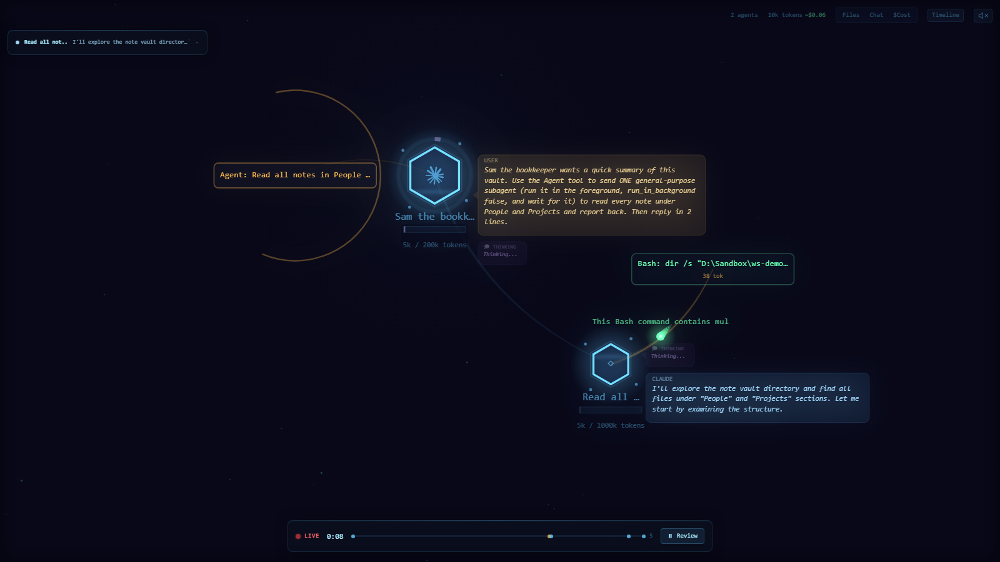
Along the top of the page are tabs, 1 per Claude Code session running on your computer. Each tab is titled with the first words of that session's opening message. Top right shows how many agents are running, an estimate of tokens used (tokens are the units Claude's usage is counted and billed in) and an estimated cost. Along the bottom is a timeline with a LIVE marker and a Review button that replays what happened. There is also a sound button in the top right corner, which mutes the page's small sound effects.
agent-flow was written by another developer and published free, with its code open for anyone to read and change (the Apache 2.0 licence; code at github.com/patoles/agent-flow). It is listed as agent- on npm, the public store of Node.js programs, version 0.9.1 checked on 2026-09-22. It also comes as an add-on for the VS Code code editor. Our download does not contain agent-flow. It contains 5 small Python scripts: an installer (install.py), a start-and-stop script (start.py), 2 checking scripts (check_hooks.py and cleanup.py) and guard.py, a small program that sits between agent-flow and your browser. Together they set agent-flow up safely, because agent-flow installed on its own, unchanged, has faults on Windows that kept coming back from 2026-06-12 to 2026-09-16, and 1 more fault, on Windows and Mac alike, that can throw away your Claude Code settings file and everything in it.
This is piece 1 of 4 in the agent workspace. Install them in order: 1 agent-flow, 2 FleetView, 3 ProjectForge, 4 Jeeves. Each one also works on its own.
Words used in this guide
| Word | What it means here |
|---|---|
| Session | 1 conversation with Claude Code, running in 1 terminal window. |
| Subagent | A second Claude that your session starts to do 1 job and report back. |
| Tool call | 1 action Claude takes, such as reading a file or running a command. |
| Token | The unit Claude's usage is counted in. 4 tokens are roughly 3 words. |
| Hook | A command Claude Code runs by itself every time a given event happens, such as a tool about to run. Hooks are listed in settings.json. |
| Terminal | The text window where you type commands: PowerShell on Windows, Terminal on a Mac. |
| Server | The agent-flow program running in the background on your computer, which draws the page. |
| 127.0.0.1 and localhost | 2 ways of writing "this computer". An address that starts with either of them opens only on your own computer. |
| Port | The number after the colon in an address such as http://127.0.0.1:3001. It picks out which program on your computer answers. In this set of 4: agent-flow 3001, FleetView 3010, ProjectForge 3020, Jeeves 4040. |
| Node.js, npm, npx | Node.js runs programs written in JavaScript; npm is its public store of programs; npx downloads a program from npm and runs it. |
| settings.json | Claude Code's settings file, in the .claude folder inside your home folder. |
| Repo | A project's folder of code, kept on GitHub. git clone copies it to your computer. |
| Watch folder | The folder agent-flow listens to; only sessions started inside it appear. |
| Exit code | The number a program hands back when it finishes; 0 means all went well. |
Piece 1 · agent-flowWhy you would want it
When you run agents, most of the work is invisible. You type a request and later an answer arrives. You do not see which subagents were called, in what order, or which files they opened. The 5 situations where that matters are listed under Works well when, below.
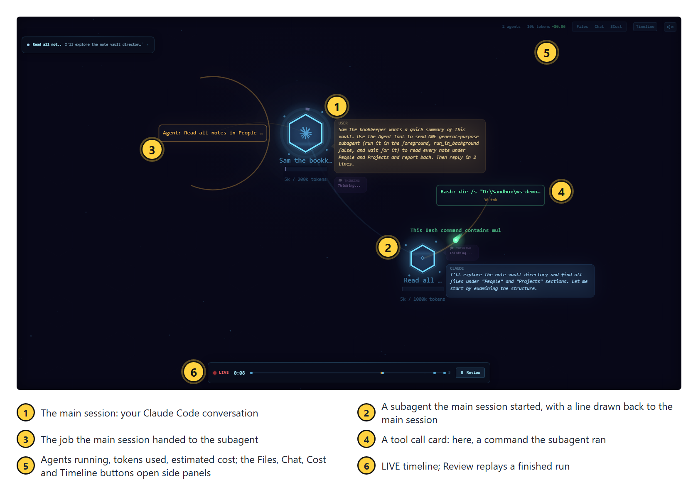
agent-flow only reads what your agents do; it cannot change it.
What it is for
Watching, as it happens, which subagents a Claude Code session starts and which files and commands it uses.
Works well when
- You are building an agent. Its instructions say it calls 3 specialists. You run it with this screen open and see which specialists it really starts, in what order, and every file it really reads.
- A session is slow or costing more than you expected. You see the moment it starts 5 subagents at once, or reads the same file 4 times.
- You are recording your screen for a video, for a client, or for a live training you are running. Someone watching it understands in 5 seconds what a written description never gets across.
- You have just changed an agent's instructions and want to watch the next run rather than read a summary of it afterwards.
- You want to know why a session has gone quiet: waiting on 1 slow command, or working through 6 subagents.
Does not work well when
- agent-flow keeps nothing. The Review button replays only what the agent-flow program on your own computer is still keeping; stop that program and the record is gone for good. For a written trail of what each agent did, use ProjectForge, piece 3 of 4.
- You want every session on 1 screen. It draws 1 session per tab and you click between them. Ashley's attempt to merge them failed on 2026-06-12 (see How we built it). FleetView, piece 2 of 4, is the screen that does this.
- You are screen-sharing or recording for other people. Each tab is titled with the opening words of that session's prompt, and the cards beside each agent show your file names and commands. Check the tabs before you share.
- You want to leave it running all day unwatched. agent-flow listens for events on a second numbered address of its own, and it accepts made-up events from any website that guesses that number. That is agent-flow's own code, not ours, so the only real fix is a change to agent-flow itself. Stop it when you are not watching:
python start.py --stop. - Do not install this piece if you do not want Node.js on your computer. agent-flow needs Node.js, and once agent-flow's small command has been added to Claude Code's settings file, every tool call starts Node.js once, even when the screen is off, until you uninstall.
Piece 1 · agent-flowHow we built it
This is how Ashley set agent-flow up on his own Windows PC, what broke, and what we kept. Every date and count below was read from his files, settings backups and logs on 2026-09-22.

agent-flow is 1 of 4 screens Ashley built around his agents. The other 3 each have their own guide in this set of 4: FleetView, ProjectForge and Jeeves.
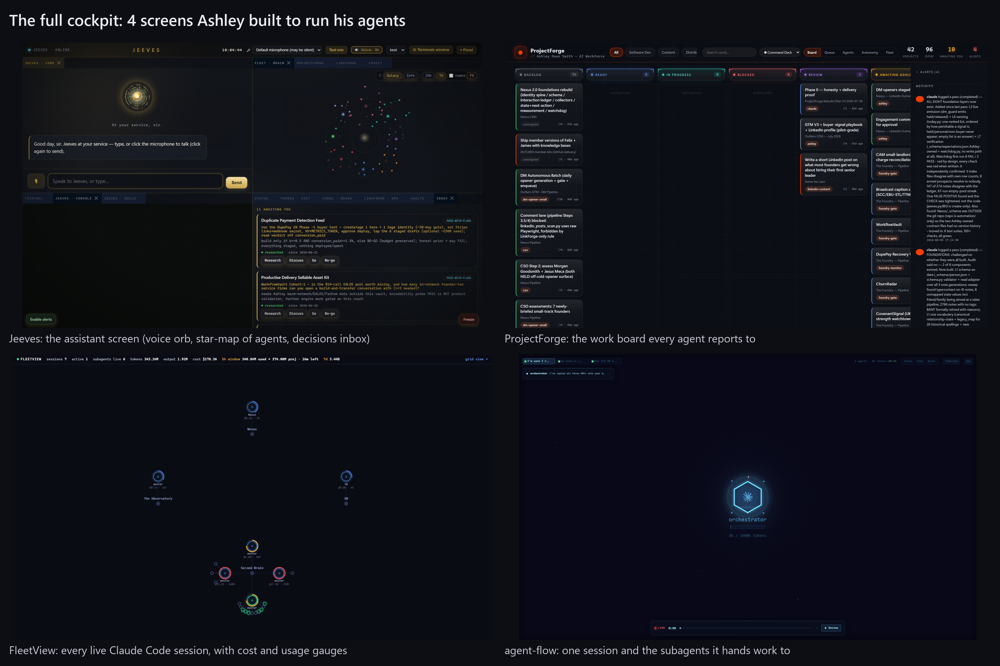
Claude Code lets you register a hook: a command it runs by itself every time a given event happens, such as "a tool is about to be used" or "a subagent has started". agent-flow registers a small script, hook.js, on 9 kinds of event. Each time 1 of them happens, Claude Code runs hook.js and hands it a description of the event. The script looks in the folder <your home>/.claude/ for small files that say where the agent-flow server (the agent-flow program running in the background, which draws the page) is listening, and sends the event there. The server updates its picture and your browser redraws.
The hook is only half of what draws the page: the server also reads Claude Code's own session transcript files, in <your home>/.claude/, and that is where the tab title, the conversation in the Chat panel, the token counts and every subagent come from. The second hexagon, and the line joining it to the first, are drawn from the place in that transcript where the session starts the subagent, not from the "a subagent has started" event, which records only a name.

2026-06-12: install day
- Installed with
npx -y agent-(theflow- app -yanswers yes to the download question).npxcomes with Node.js; it downloads a Node.js program and runs it in 1 go. On its first run the package wrotehook.jsand added it to 9 kinds of event in Claude Code'ssettings.jsonfile: SessionStart (a session opens), PreToolUse and PostToolUse (before and after each tool call), PostToolUseFailure (a tool call fails), SubagentStart and SubagentStop, Notification (Claude Code shows a message), Stop (Claude finishes a reply) and SessionEnd (a session closes). - Windows fix 1, the launch folder. The server remembers the folder it was started from, and only accepts events from Claude Code sessions running inside that folder. Started from the wrong place, it shows nothing. So it was set to start from the Documents folder, which contains every vault.
- Start at logon, with no window. A small Windows script file,
agent-, went into the Windows Startup folder (Windows runs everything in that folder when you log in). It runsflow.vbs npx -y agent-, andflow- app --no- open --no-stops it opening a browser tab.open - Every session on 1 screen, tried and undone. Ashley wanted every session on 1 screen instead of 1 tab each. We changed agent-flow's own code so it sent every session to the same screen. The data looked right, and it was reported as done without anyone looking at the screen. Ashley's reply: "that hasn't worked - It's not working at all." agent-flow's drawing code supports exactly 1 main hexagon per screen, so 6 main hexagons stacked on the same spot and their labels turned to nonsense. agent-flow was put back exactly as its author published it. Since then, every change to a screen is checked with a screenshot, never by reading the data behind it.
- The 1-screen wish went to a different tool, FleetView, which is piece 2 of 4.
- A backup of
settings.jsontaken at 17:00 that day already had 5 copies of the agent-flow hook on every event. The next day's backup had 4.
Windows fix 2: old files pointing at servers that had stopped (date not recorded)
Each time the server starts it writes a small file into <home>/.claude/. Its name is a random code, a dash, the process number (the number Windows gives each running program), then .json, and inside it says which port that server listens on and which folder it watches. This guide calls those files registration files. The hook is meant to delete files for servers that have stopped. On Windows its "is this server still alive?" check is written to always answer yes. Worse, when several files match a session's folder, the hook sends only to the server watching the smallest folder that contains the session (Documents\Second Brain is smaller than Documents, because it sits inside it). So if an old file names a server for a smaller folder, and that server has stopped, every event goes to it and is lost, the real server gets nothing, and the screen stays empty. The fix was to delete the old files and keep the file for the server that is running. 13 such files were still in that folder on 2026-09-22, dated 2026-06-12 to 2026-08-06.
2026-07-09 to 2026-09-16: the hook copies pile up
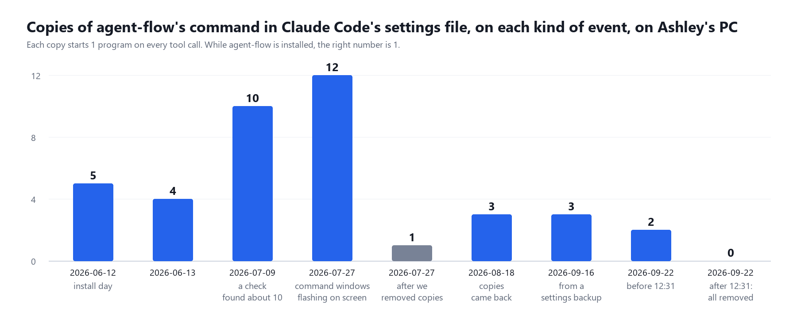
- 2026-07-09: a check of the settings file found the hook registered about 10 times on every event.
- 2026-07-19:
npxdownloaded the newer agent-flow, version 0.9.1. - 2026-07-27: Ashley: "Instances keep opening on my PC." The settings file had 112 hook entries in total; agent-flow's was on every event 12 times. Each tool call started about 27 small command-window programs, and each flashed a window on screen. Every hook was cut to 1 copy per event and command: 112 entries down to 13.
- 2026-08-18: the copies had come back: 3 per event.
- 2026-09-16: a backup shows 3 per event. On 2026-09-22 the file had 2 copies per event, and all of them were removed that day. No written record was found of the drop from 3 to 2.
At the time, why the copies piled up was not recorded. While building this kit on 2026-09-22 we read agent-flow 0.9.1's own set-up code and found a cause. Before adding its hook, agent-flow checks whether it is already there by searching your settings for the text agent-, with a forward slash. On Windows the path it writes uses backslashes: agent-. The search never matches its own entry, so every time the server starts, it adds another copy to all 9 kinds of event. We tested it in a test folder: 3 starts gave 3 copies per event. A server that starts at every logon, plus starts by hand during fixes, matches every rise in the chart. We cannot prove it was the only cause, because nobody logged each start.
Our fix changes only the direction of the slashes: the installer writes the same hook with forward slashes (C:/). Windows accepts forward slashes, and agent-flow now recognises its own entry and leaves your settings alone. Tested the same day: with our forward-slash version of the hook line in settings.json, starting agent-flow twice more added no further copies.
The usage-tracking finding
agent-flow 0.9.1 sends anonymous usage events (an install code, its version, your operating system, session length) to a server run by its author, unless 1 of 2 switches is set before it starts: AGENT_FLOW_TELEMETRY= or DO_NOT_TRACK=. These are environment variables: settings a program reads from Windows or macOS when it starts. The GitHub page summary says tracking is off by default; the code switches it on. On Ashley's PC, 4 such events were logged between 2026-07-19 and 2026-08-06, because the file that started his agent-flow at logon set neither switch. Ours sets both.
2026-08-06: switched off
At 17:25 on 2026-08-06 the Startup entry for agent-flow was switched off in Windows' Startup apps list, in the same minute as the FleetView dashboard. Who did it and why was not written down. A note Ashley wrote on 2026-09-22 says these screens were "stopped not deleted" when his work changed direction. The hooks were left in place, so every tool call still started Node.js (the program that runs agent-flow's scripts) once, found no server and quit. Our uninstall removes those hooks.
2026-09-22: what a security check of our own kit found
Before this guide went out, our 5 Python scripts (the kit you download) were tested by someone trying to break them, using the real agent-flow in a test home folder. 3 faults were found and all 3 are fixed in the version you download.
- agent-flow could wipe your Claude Code settings at logon. agent-flow runs its own set-up every time it starts. If it cannot read
settings.json, it throws the whole file away and writes a new one containing only its 9 hooks: your permission rules, your blocked commands, your model choice and every other hook, gone, with no backup. 2 ordinary slips make the file unreadable to it: a comma after the last item (easy to leave after a hand edit), and an invisible marker at the very start of the file called a byte-order mark, which Windows PowerShell and some editors add when they save. With agent-flow starting by itself at logon, that would happen the next time you logged in, with nothing on screen to tell you. Our fix:start.pynow checks the file before every start and does not start agent-flow if the file is unsafe; it says why on screen and inlogs/. There is also a second check: a new file,start.log guard.py, keeps an exact copy of your settings before agent-flow starts, watches the file for the first 60 seconds, and puts your copy back if agent-flow changed it. Tested with the real agent-flow: with a comma after the last item, or with a byte-order mark, your settings file is left exactly as it was, character for character. - Stop could close an unrelated program.
start.py --stopused to stop whatever program had the process number saved when agent-flow last started. After a restart, Windows can give that number to any program, including Claude Code or your browser. Our fix: the saved record now includes the moment the program started, and stop only acts when both match. - Other websites could read the page. agent-flow's page shows your conversation as it happens: your prompts, Claude's replies, file names and commands. It answers every request that reaches it, and never checks which website the request came from. A website you visit can trick your browser into sending its requests to your own computer, and then read your conversation while you browse. Our fix: agent-flow now answers on a second port that only
guard.pytalks to, andguard.pyshows you the page at http://127.0.0.1:3001. It answers only requests addressed to this computer (127.0.0.1,localhostand[::1]are 3 ways of writing "this computer"). Anything else is refused.
1 weakness remains. It is in agent-flow's own code, so we cannot fix it from outside. The separate port that receives events from hook.js accepts them from any web page, so a website that guesses that port number (it changes at every start) could draw fake sessions and fake tool calls on your screen. It cannot read anything through that port. If you are not watching agent-flow, stop it with python start.py --stop. A real fix needs a change in agent-flow itself (github.com/patoles/agent-flow).

What we kept for you
- agent-flow exactly as its author published it, downloaded by your own computer from npm. We changed none of its code.
- The hook entry in settings.json written with forward slashes (/), so agent-flow recognises it and never adds another copy.
- A small file in your Startup folder that starts agent-flow when you log in, with no window, from the folder that contains your vaults, with usage tracking off.
cleanup.py, which deletes the registration files a stopped agent-flow server left behind saying where it was listening, and ends a second server left watching the same folder, run automatically before every start.check_hooks.py, a count of every hook on every event.guard.py, which puts settings.json back if agent-flow wipes it and refuses page requests from other websites (both found when we tried to break the kit on 2026-09-22).- A start that fails now tells you why in 1 sentence, instead of pointing you at a log full of Node.js text (added 2026-09-23: we started agent-flow 34 times in a row, 1 start failed, and the message it printed could not be read).
Piece 1 · agent-flowPros and cons
| Pros | Cons | |
|---|---|---|
| Cost | Free, with its code open to read. Uses no Claude tokens itself. | Every tool call starts Node.js once, to run hook.js (it ends within 1.5 seconds and never makes Claude wait). It does this even when the server is off, until you uninstall. |
| Setup | About 1 minute with our installer, plus the first download. | Needs Node.js, which most people do not have yet. |
| What you see | A subagent appears within a second of starting, read from Claude Code's own session transcript file; every tool call is a card beside the agent that made it; the Review button at the bottom of the page replays a finished run. | 1 session per tab. There is no single screen with every session: our 2026-06-12 attempt to add that screen failed. FleetView (piece 2 of 4) is that screen. |
| Accuracy | Tool calls come straight from Claude Code's own events; subagents, the conversation and the token counts are read from Claude Code's session transcript files. | Token counts and costs are estimates. On Ashley's PC they disagreed with FleetView (the session-and-cost screen in piece 2 of 4) for the same session. |
| Privacy | The page only listens on your own computer, and guard.py (our program between agent-flow and your browser) refuses requests addressed to anything but your own computer. | Tab titles show the first words of your prompts, so take care when screen-sharing. Usage tracking is on unless switched off (our start-at-logon file switches it off). A website that guesses a port number can still draw fake sessions on your screen. |
| Safety | Our kit will not start agent-flow on a settings file it would wipe, and puts the file back if it changes anyway. | agent-flow still runs its own set-up every time it starts. Our checks run before and after that set-up; they cannot stop it happening. |
| Windows | Our kit fixes the 2 known Windows faults: the start folder, and leftover registration files that swallow events. Closing agent-flow by force (from Task Manager, or a crash) used to leave a second server running and sending the same events twice; cleanup.py now counts how many agent-flow servers are running, instead of how many folders are being watched, ends the extra server, and prints a line saying it did. | agent-flow's own registration files are still written by agent-flow, so a server closed by force leaves its file behind until the next python start.py or python cleanup.py. |

Piece 1 · agent-flowBefore you start
| You need | How to check | If it is missing |
|---|---|---|
| Claude Code | claude --version | You have it from earlier Outliers Accelerator sessions. |
| Python 3.11 or newer | python --version (Mac: python3 --version) | python.org. install.py tests this and stops if it is older, because Python 3.8 stopped getting security fixes on 2024-10-07 and 3.10 stops on 2026-10-31. |
| Git | git --version | git-scm.com |
| Node.js 22 or newer | node --version | Get whichever version nodejs.org offers as LTS on the day (LTS means long-term support, the version that goes on getting security fixes longest); the test PC in the picture below ran 26.3.0. Node.js 18 stopped getting security fixes on 2025-04-30 and Node.js 20 on 2026-04-30, so install.py stops on anything below 22. Windows: the LTS installer from nodejs.org, or winget install OpenJS.NodeJS.LTS (winget is Windows' built-in install command). Mac: nodejs.org or brew install node (if you have Homebrew, a Mac install tool). Then open a NEW terminal (the text window where you type commands), because a terminal opened before the install cannot find Node.js. |
| Port 3001 free (the number the page answers on) | Open http://127.0.0.1:3001 in a browser; it should fail to load | Install with python install.py --port 3002 instead, then use 3002 wherever this guide says 3001. |
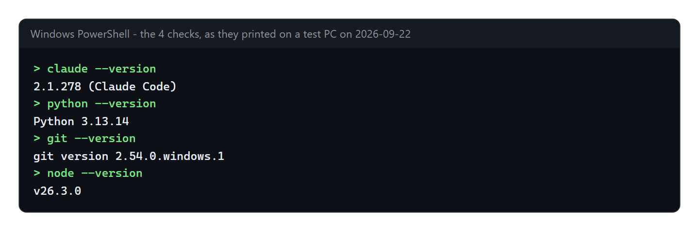
You also need to know where your second brain vault and your CRM vault live. The installer finds them for you in 1 of these ways: small files called .outliers- and .outliers- in your home folder, each containing the path to 1 of your vaults (the installers from earlier Outliers Accelerator sessions left them there), a folder with an .obsidian folder inside it (that is what makes a folder an Obsidian vault) up to 2 levels under your home or Documents folder, or, for the CRM, a vault whose name contains crm, pipeline, sales or clients, or a folder at C:\.
Piece 1 · agent-flowInstall it
- Open a terminal. Windows: press the Windows key, type
PowerShell, press Enter. Mac: open Terminal. It opens in your home folder, which is where all 4 downloads in this set go. - Run the clone and install line:
git clone https://github.com/OUTLIERS-ai/outliers-ws-01-agent-flow; cd outliers-ws-01-agent-flow; python install.pyOn a Mac use python3. Keep the folder where it lands: the small file that starts agent-flow when you log in points at it.
- Answer 3 questions. Press Enter to accept the suggestion in square brackets.
- Where is your second brain vault?
- Where is your CRM vault?
- Which folder should agent-flow watch? It suggests the folder that contains both vaults. It must contain every folder you run Claude Code in, or those sessions will not show.
If a question shows no suggestion, paste the full path of that vault (in File Explorer, click the address bar and copy it). No CRM vault yet? Press Enter to leave it blank.
- Wait for the first run. The installer downloads agent-flow and starts it once, with no window, pointed at a temporary empty folder that stands in for your home folder, so it writes its own
hook.jswithout touching your settings. It copies that script into your.claude/folder and stops it. This can take up to 3 minutes on a slow connection. No login is needed.agent- flow - Read the table the installer prints at the end: 1 row per kind of event. Every event should show
1in the "after" column. If you had old copies, the "before" column shows how many, and a dated backup of your settings is named on screen. The file that starts agent-flow at logon isoutliers-in your Startup folder; that is the name you see in Windows' Startup apps list.agent- flow.vbs
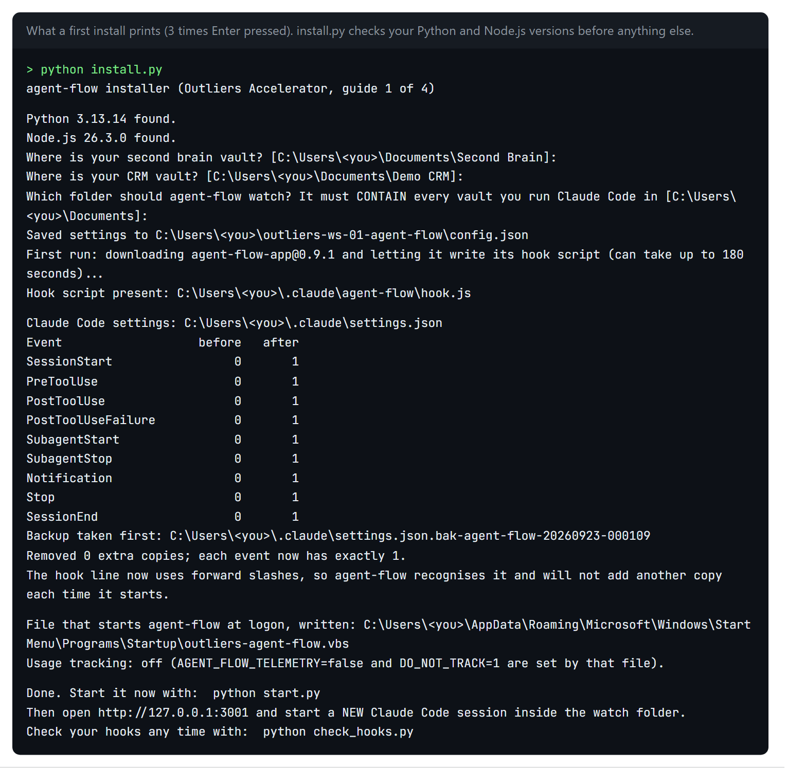
- Start it now:
python start.py. From now on it also starts by itself, with no window, each time you log in. - Open http://127.0.0.1:3001. In the middle of the page you see "WAITING FOR AGENT SESSION" in capitals, and under it "Start a Claude Code session to see activity".
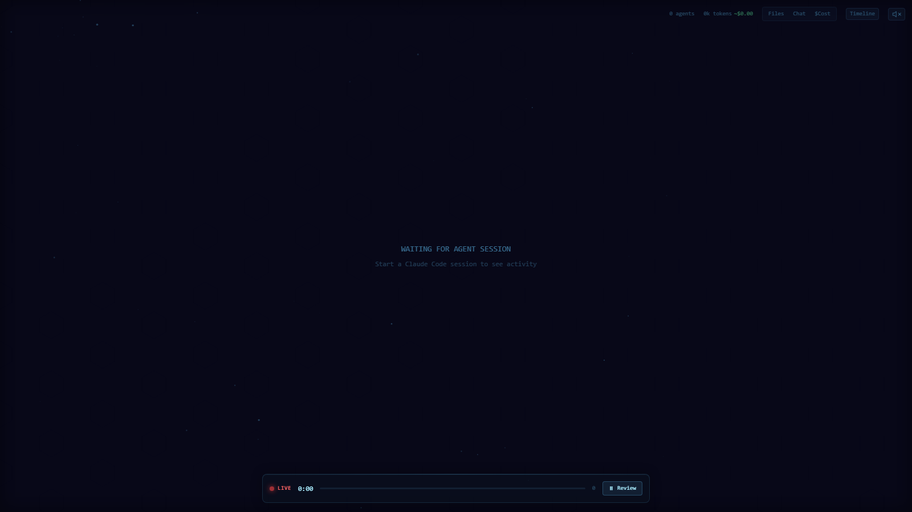
- Open a new Claude Code session inside 1 of your vaults. Sessions that were already open show nothing, because Claude Code reads hooks only when a session starts. Ask it for something that uses a subagent, for example: "Use a subagent to list the notes in my People folder, then summarise them in 2 lines." A hexagon appears, then a second hexagon with a line to it. Nothing after 30 seconds? Check the session was started AFTER step 6 and inside the watch folder shown by
python start.py --status, then see the "When it goes wrong" table at the end of this guide.
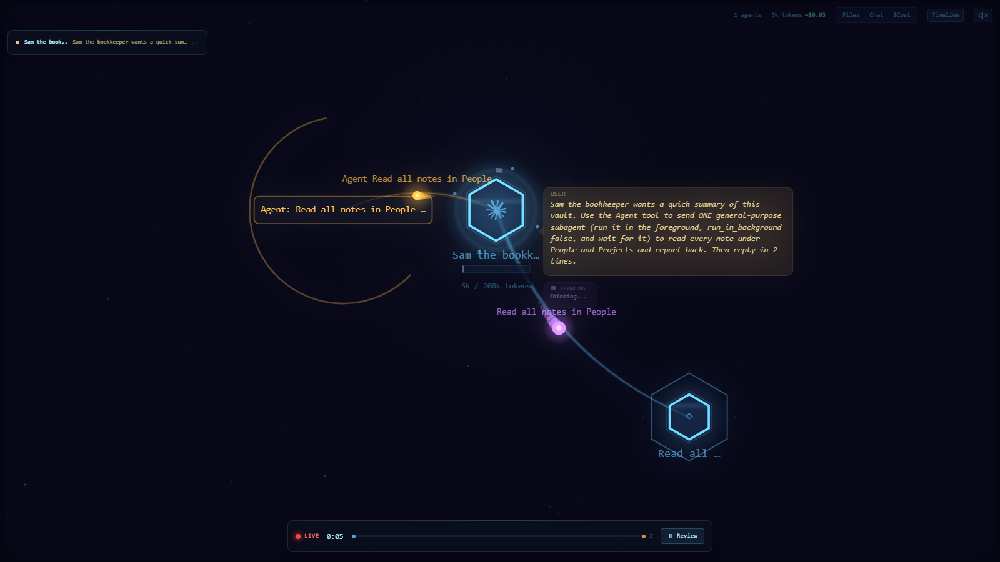
- Run
python check_hooks.py. It should end withRESULT: OK.
to remove everything later, run python install.py --uninstall. It stops the server, takes a backup, removes the 9 hook entries, and deletes the file that starts agent-flow at logon. Your settings go back to exactly how they were, character for character, as long as the backup from your first install is still there. If you had no settings file before, an empty settings file (containing only {}) is left. The folder .claude\ stays; you may delete it by hand.
Piece 1 · agent-flowUsing it day to day
Every command below runs inside the downloaded folder. In a new terminal, type cd outliers- first.
- Leave the page open in a browser tab while you work. Switch tabs at the top to follow a different session.
- Press Review on the bottom bar to replay a run that has finished.
- The Files, Chat and Timeline buttons top right open side panels: which files were touched, the conversation, and a timeline of every call.
- The $Cost button beside them opens no panel. It writes an estimated price above each hexagon and draws a small cost box in the corner of the picture, split by agent and by tool. Nothing appears until a session has used enough tokens for the estimate to come to more than $0.00.
- Check your hooks once a week:
python check_hooks.py. Anything other than 1 per event means something else has been writing to your settings. - If the page goes quiet: run
python start.py --stop, thenpython start.py, then open a new Claude Code session. - If a start fails, it now tells you why in 1 sentence on screen: the port was taken, the internet is not reachable and agent-flow is not saved on this computer yet, Node.js is missing or too old, or the package name in
config.jsonis wrong.python start.py --statusrepeats that sentence later. - Stopping:
python start.py --stopsays "Stopped agent-flow." or "agent-flow was not running. Nothing to stop." Check any time withpython start.py --status. - If you move your vaults, run
python install.pyagain and give the new watch folder. The suggestion in square brackets is your OLD watch folder, so type the new one. If the server was running, the installer stops it and starts it again for the new folder. - Screen-sharing: close the tab or pick a demo session first. Tab titles show the start of your prompts.
- When you are not watching, stop it with
python start.py --stop. While it is stopped, no website can reach the page.
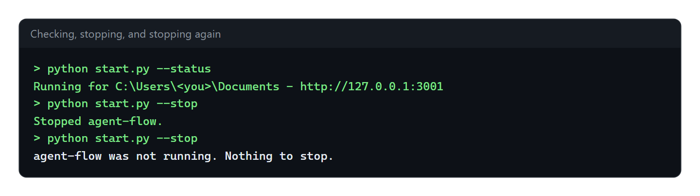

Piece 1 · agent-flowFit it to your own AI system
Change this download. It is yours now, and it is meant to be altered until it matches how you work. Ashley did exactly that with his own copy. He tried patching agent-flow to put every session in 1 tab, looked at the screen, saw 6 sessions stacked on the same spot, and threw the patch away. He worked out the 2 Windows fixes himself: start the server from the folder that sits above all your vaults, or it never hears your sessions; and delete the leftover registration files, or events stop arriving with no warning. He wrote the hidden start-at-logon file with usage tracking switched off. He added a count of hooks after his own settings file reached 12 copies of the same hook on every event. Every one of those fixes is in what you have downloaded.
Each idea below comes with a prompt you can paste into Claude Code, opened in the outliers- folder unless it says otherwise.
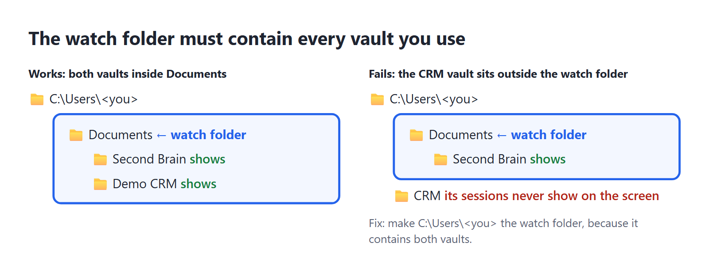
- See your second brain AND your CRM in 1 place. The server only hears sessions inside its watch folder. If your CRM lives at
C:\and your second brain inUsers\<you>\ CRM Documents, the only folder containing both is your home folder.
Read config.json. Tell me whether my second brain vault and my CRM vault are both inside watch_folder. If not, run install.py again with --watch-folder set to the nearest folder that contains both, and show me the before and after.- Watch your content system write a batch of posts. Run whatever agents or scripts write your posts from a folder inside the watch folder, open agent-flow, and start a batch. You will see which steps call subagents and which run as plain code.
The agents or scripts that write my posts live at <path>. Check whether that folder is inside the watch_folder in config.json. If it is not, tell me the smallest change: move the folder, or widen the watch folder. Do not move anything without asking.- Check an agent you are building really does what its instructions say. Open the agent's file, list what it claims to call, run it with agent-flow open, and compare.
Read ~/.claude/agents/<agent-name>.md. List every subagent, tool and file it says it uses, as a checklist. I will run it now with agent-flow open and tell you what cards appeared. Then mark each checklist line as seen, not seen, or seen but not listed.- Give every subagent a real name. If your session starts a subagent that is not one of the named agents in your agents folder (the
.claude\folder inside your home folder, where each agent has its own file), it shows as a hexagon with no name. Named agents make the picture readable.agents
Search my second brain's CLAUDE.md and my agent files for places that start a subagent with a generic type such as general-purpose. List each one and suggest which named agent from ~/.claude/agents/ should be used instead. Change nothing yet.- Keep a permanent log. agent-flow keeps no history once the server stops. Add a second, separate hook that appends each event to a dated file, then summarise a day into your second brain.
Add 1 NEW hook to my Claude Code settings.json on SubagentStart and SubagentStop that appends the event as 1 JSON line to ~/.claude/agent-events/YYYY-MM-DD.jsonl. Use a Python script run with pythonw.exe so no window opens. Take a dated backup of settings.json first, write it with a temp file and os.replace, and run python check_hooks.py afterwards to prove every event still has 1 copy of each command.- Stop Node.js starting for nothing when the server is off. If you only use agent-flow sometimes, every tool call still starts Node.js for nothing. Remove the hooks when you stop, and put them back when you start.
Write stop_all.py and start_all.py in this folder. stop_all.py runs start.py --stop and then removes the agent-flow hooks using common.remove_agent_flow, with a backup. start_all.py puts the hooks back with common.install_agent_flow and runs start.py. Add tests using a temporary home folder, like the ones in tests/, and run them with python -m pytest -q.- Run it only when you want it. Skip the file that starts agent-flow when you log in, and make a desktop shortcut instead.
--no-also removes that file if you already have it.autostart
Run python install.py --no-autostart and check that outliers-agent-flow.vbs is no longer in my Startup folder. Then create a desktop shortcut called "Agent screen" that runs start.py with pythonw.exe (Windows) so no window appears, and a second one that runs start.py --stop.- Capture footage for content. Record the page while several agents are working at once: it gives you a short video of "the agents working" to use in a post.
Write capture.py: open http://127.0.0.1:3001 in headless Playwright at 1600 by 900, take a screenshot every 2 seconds until I press Ctrl+C, and save them numbered into a folder called captures with today's date. No visible browser window.- Weekly hook check without a window. Run the duplicate check once a week, with no window, and write the result into your second brain's inbox only when something is wrong.
check_hooks.pyends with exit code 1 when it finds a duplicate and 2 when settings.json cannot be read (an exit code is the number a program hands back when it finishes; 0 means all well).
Create a Windows scheduled task that runs check_hooks.py once a week on Monday at 09:00 through pythonw.exe, hidden. If the exit code is 1 or 2, write a short note into <second brain>/Inbox/ named YYYY-MM-DD hook check.md with the output. Do not run it more often than weekly.Piece 1 · agent-flowEvery command and setting
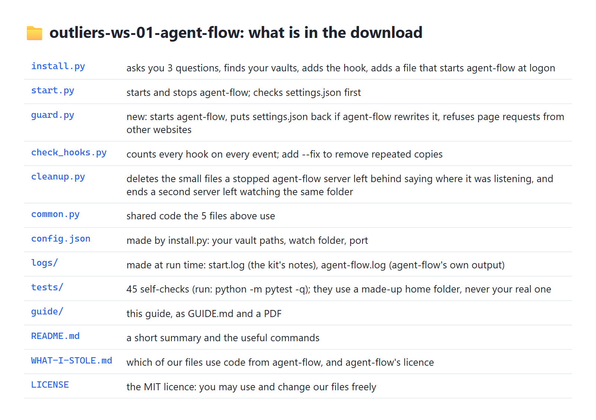
install.py (every option can be combined with the others)
| Option | What it does |
|---|---|
| (none) | Asks you 3 questions, then installs. |
--yes | Accepts every suggestion without asking. |
--second-, --crm <path> | Gives the vault paths instead of answering the questions. |
--watch- | Sets the watch folder and skips the 3 questions. The installer warns you if a vault is not inside it. |
--port <number> | The page's port (default 3001). A running server is moved to the new port. |
--no- | Does not add the file that starts agent-flow at logon; also removes that file if you already have it. |
--start- | Starts the server at the end, so you can skip step 6. |
--uninstall | Stops the server, removes the 9 hooks (backup first) and the file that starts agent-flow at logon. |
--package, --node-, --wait, --startup- | Advanced and for testing. --package: which agent-flow version to run (default agent-). --node-: which copy of Node.js the hook should use. --wait: how many seconds to wait for the first download (default 180). --startup-: a different Startup folder. |
start.py
| Option | What it does |
|---|---|
| (none) | Checks settings.json, deletes leftover registration files, starts agent-flow with no window, prints the address. |
--stop | Stops the server this kit started. |
--status | Says "Running" or "Not running", and if the last start was refused or failed, the 1-sentence reason. Exit code 0 when running, 1 when not. |
--port, --watch-, --package, --wait | Override config.json for this run only. |
--foreground, --quiet | Used by the files that start agent-flow when you log in. --foreground: stay running until agent-flow stops, instead of handing your terminal straight back, which the Mac login job needs. --quiet: print nothing at all, which the Windows file needs. |
check_hooks.py: --fix keeps 1 copy of each repeated hook after a dated backup; --settings <file> checks a different settings file. Exit codes: 0 all well, 1 duplicates found, 2 the file cannot be read.
cleanup.py: --dry- only reports what it would delete or end; --quiet prints nothing. It removes registration files for servers that have stopped, and when 2 servers are watching the same folder (what closing agent-flow by force leaves behind) it ends the older server and takes its file away.
Files the kit makes while it runs
config.json: your 2 vault paths, the watch folder, the agent-flow version, the port and whether the start-at-logon file is on.config.example.jsonshows what the file looks like.logs/: the kit's own notes, such as a refused start or a settings file put back.start.log logs/: agent-flow's own output.agent- flow.log start.pyreads its last 30 lines to work out the 1-sentence reason it prints when a start fails; open it yourself for the full text.logs/(PID stands for process ID, the number Windows gives the running program): that number and the server's start time, soagent- flow.pid --stopfinds it and nothing else.- Settings backups next to
settings.json:settings.json.bak-(before install),agent- flow-<date> .bak-(before an uninstall),agent- flow- uninstall-<date> .bak-(beforehookdedupe-<date> --fix) and.bak-(agent-flow's rewritten version, kept whenagent- flow- undo-<date> guard.pyput yours back). - The file that starts agent-flow at logon: on Windows
outliers-in your Startup folder; on a Mac a login job,agent- flow.vbs ~/, which runs at your next login (to start it now:Library/ LaunchAgents/ com.outliers.agent- flow.plist launchctl loadfollowed by that path).
Worth knowing
- If you set
CLAUDE_CONFIG_DIR(a setting that tells Claude Code to keep its settings in a different folder), the installer uses that folder. agent-flow itself always uses<home>/.claude, so it will not find your session transcripts and you get a half-drawn page. See the "Half a page" row of "When it goes wrong". - agent-flow also watches OpenAI Codex (OpenAI's coding assistant) unless the environment variable
AGENT_FLOW_RUNTIME=is set. It does no harm if you do not use Codex.claude - The kit's 45 automatic self-checks run with
python -m pytest -q. They use a made-up home folder and a fake agent-flow, so your real settings are never touched. 4 more checks run against the real agent-flow if you first set the environment variableAGENT_FLOW_REAL=; without it those 4 are skipped. Measured from a fresh copy on 2026-09-23: 45 passed, 4 skipped.1
Piece 1 · agent-flowWhen it goes wrong
| What you see | Why | Fix |
|---|---|---|
| The page says "WAITING FOR AGENT SESSION" forever | The session was already open when the server started, or it runs outside the watch folder. | Open a NEW session inside the watch folder. Check the folder with python start.py --status and config.json. |
Half a page: tool call cards appear, but no subagent hexagons, the tab is titled Session and a number instead of your prompt, and the token count stays at 0 | You have set CLAUDE_CONFIG_DIR to keep Claude Code's folder somewhere other than <home>/.claude. The hook still reaches agent-flow, but agent-flow reads session transcripts only from <home>/.claude/, and yours are not there. | Start Claude Code without CLAUDE_CONFIG_DIR, or move the folder back to <home>/.claude. agent-flow cannot be pointed anywhere else; the folder is written into its code. |
| Still nothing after a new session | A leftover file from an old agent-flow server, pointing at a folder deeper inside your watch folder, is taking the events (Windows only). | python cleanup.py, then python start.py --stop and python start.py, then a new session. |
| "agent-flow was NOT started, to protect your Claude Code settings" | settings.json has a typing error, or an invisible marker at its very start that some editors add (a byte-order mark); agent-flow would have replaced the whole file. | Error with a line number: open settings.json at that line, fix it (a comma after the last item is the usual cause), save. Byte-order mark: run python install.py, which removes it after a backup. Then python start.py. |
| The page never loads after logging in | The settings check refused to start agent-flow at logon, or the start failed, and nothing was on screen to tell you. | python start.py --status prints the 1-sentence reason; fix as it says, then python start.py. |
| "agent-flow did not start", then a sentence | The start failed. The sentence names the cause: the port was taken, the internet could not be reached and agent-flow is not saved on this computer yet, Node.js is missing or too old, or the package name in config.json is wrong. | Do what the sentence says. For a taken port, run python start.py again. logs/ has the full text if you want it. |
| "Ended 1 agent-flow server(s) left behind when the last one was closed by force" | agent-flow was closed from Task Manager, or the computer shut down without python start.py --stop, so agent-flow outlived the program that started it. | Nothing to do. It has already been ended. Use python start.py --stop rather than Task Manager and it will not happen again. |
| Command windows flash on screen on every tool call | Copies of agent-flow's command have piled up in Claude Code's settings file. Before our scripts, agent-flow added 1 more copy every time it started on Windows. | python check_hooks.py --fix, then python install.py to rewrite the line with forward slashes. |
| "Port 3001 is already in use" | Another program uses that port. | python install.py --port 3002, then python start.py, then open http://127.0.0.1:3002. |
| The installer stops: Node.js not found | Node.js is not installed, or the terminal was opened before installing it. | Install it (see Before you start), open a NEW terminal, run again. Nothing was changed. |
| The installer stops: could not read settings.json | The file has a typing error in it. check_hooks.py shows the same fault with the line and column. | Open settings.json at that line, fix the error, run again. Your Claude Code settings were not changed. |
check_hooks.py says settings.json is empty | The file is there but has nothing in it. agent-flow cannot read an empty file, so at its next start it would replace it with a file that has only its own 9 hooks in it. start.py refuses to start it for the same reason. | python install.py. It writes the 9 hooks into the file properly, after a backup. |
A file called settings.json.bak- appeared | agent-flow rewrote your settings after starting and guard.py (our program between agent-flow and your browser) put your version back. The file is agent-flow's version, kept for you to look at. | Nothing to do. logs/ records when it happened. |
| The token count and the cost on this page do not match the ones on another screen, such as FleetView | agent-flow's token and cost figures are estimates. | Treat them as a rough guide. They are not a bill. |
| A change you made to the screen "should work" but looks wrong | The change was checked by reading the numbers behind the picture instead of looking at the picture. On 2026-06-12 our attempt to show every session on 1 screen had the right data while the screen showed 6 hexagons stacked on 1 spot. | Take a screenshot and look at it before calling it done. |
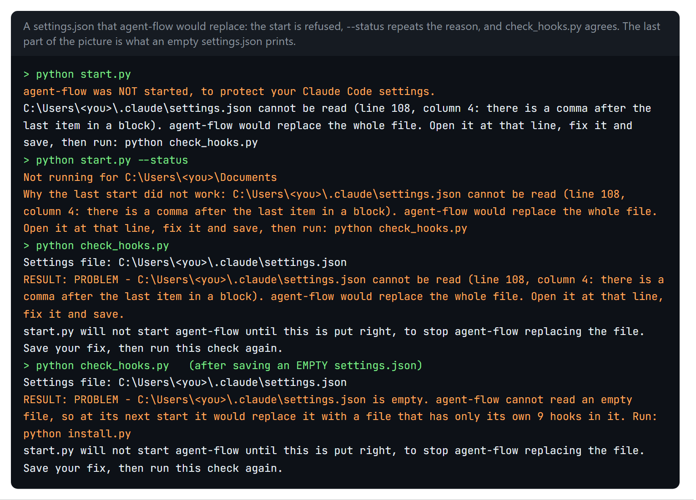
--status repeats the reason, and check_hooks.py says the same words. The last part of the picture is an empty settings.json file, which start.py and check_hooks.py used to describe differently until 2026-09-23. Made-up home folder, 2026-09-23.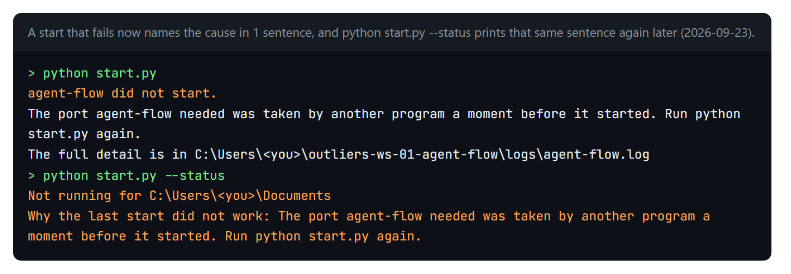
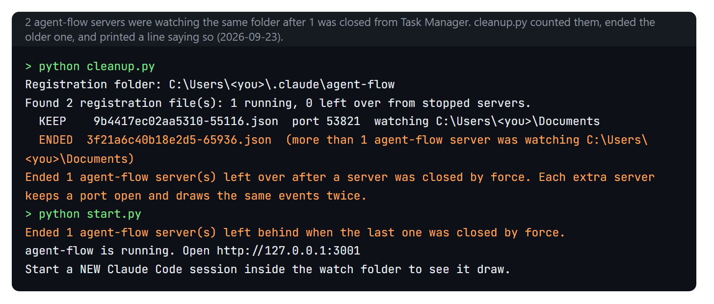
cleanup.py counts how many agent-flow servers are running, instead of how many folders are being watched, ends the older server, and the next start prints a line saying it did. Made-up home folder, 2026-09-23.do not run npx agent- by hand while this kit is installed. You get 2 servers. Your sessions report to only 1 of them, the one watching the folder nearest to the session, and a copy started by hand runs without our settings check, so it can throw away settings.json. Use python start.py instead.
Piece 1 · agent-flowDownload
The repository: https://github.com/OUTLIERS-ai/outliers-ws-01-agent-flow
git clone https://github.com/OUTLIERS-ai/outliers-ws-01-agent-flow; cd outliers-ws-01-agent-flow; python install.pyThen python start.py and open http://127.0.0.1:3001.
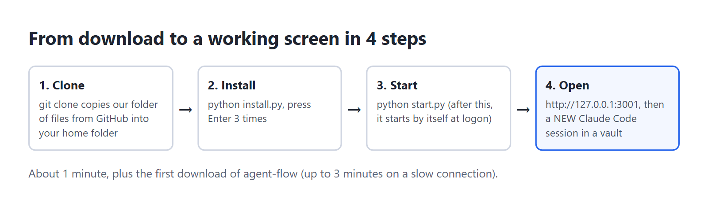
agent-flow itself: github.com/patoles/agent-flow (Apache 2.0 licence). Our 5 scripts: MIT licence. Both are free licences: you may use and change the code.
https://github.com/OUTLIERS-ai/outliers-ws-01-agent-flow
git clone https://github.com/OUTLIERS-ai/outliers-ws-01-agent-flow
cd outliers-ws-01-agent-flow
python install.py